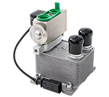
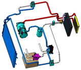
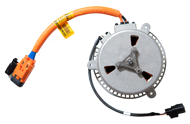

THERMAL MANAGEMENT
DELIVERING INNORVATIVE SOLUTION
Battery Thermal Management System

The prevailing technology to meet the power demand of electric vehicles is the lithium-ion (li-ion) battery and, for more than 10 years, Hanon Systems has manufactured battery thermal management systems. Utilizing vehicle and system expertise, Hanon Systems has developed components that can be applied in various system architectures to meet a wide array of customer requirements. The battery chiller is a compact plate-to-plate heat exchanger that transfers thermal energy from the battery coolant loop to the vehicle’s refrigerant loop to maintain optimum battery temperatures. The battery contact heat exchanger is packaged in the battery pack to transfer thermal energy between the battery pack and a coolant or refrigerant loop. It provides precise temperature control, specifically in lithium ion battery applications, and the fluid circuitry delivers uniform cell cooling and heating for improved battery performance and durability.Heat Pump System

The heat pump system is a solution to heating electric, hybrid and internal combustion engine vehicles where there is insufficient waste heat for cabin heating. Redirection of the refrigerant via valves allows cooling of the vehicle using the same system components. The system can extend the driving range of environmentally-friendly electric vehicles because it can cool and heat the vehicle using a minimum amount of energy.
High Voltage Cooling Fan Motor

The high voltage cooling fan motor incorporates a brushless DC motor offering high efficiency and reliability in fuel cell electric vehicle applications. Its high speed, high power design received a New Excellent Technology (NET) from the Ministry of Knowledge Economy in 2012, and is the world's first device that allows quietness and high efficiency by combining a motor and an inverter, resulting in low power consumption and light weight.